Datathon technical report — NYC Flights 2013
An airline operations desk wants to know, at the moment a flight is scheduled to depart, whether it will land more than fifteen minutes late. Fifteen minutes is not an arbitrary cutoff: it is the US Bureau of Transportation Statistics definition of an on-time arrival, so it is the number airlines are measured on and the number that decides whether a connection holds.
The prediction is only worth anything if it arrives before the decisions do. Once the aircraft has pushed back, the crew is committed, the gate is reassigned, and the passenger with a 55-minute connection is already airborne. So we fix the decision point at the scheduled departure time, before push-back, and allow the model nothing that is determined after it.
That constraint is the whole project, because it is the one most published treatments of this dataset drop. dep_delay — how many minutes late the aircraft actually left — is sitting in the flights table, correlates with arrival delay at ρ ≈ 0.9, and turns the problem into near-arithmetic. A model using it scores ROC-AUC above 0.90 and is operationally worthless, because by the time you know dep_delay you no longer need a prediction.
We did not simply exclude it. We trained both models and measured the gap, which turns out to be the most informative single number in the study:
| Decision point | PR-AUC | ROC-AUC |
|---|---|---|
| Pre-push-back (deployable) | 0.507 | 0.716 |
Post-push-back (adds dep_delay) |
0.846 | 0.903 |
Two thirds of the apparent skill of a "flight delay model" is the observation that the plane left late. What remains — the 0.507 — is the part that is genuinely forecastable in advance, and it is the subject of this report.
Source. NYC Flights 2013, available on Kaggle at https://www.kaggle.com/datasets/aephidayatuloh/nyc-flights-2013 and canonically as the nycflights13 R package (https://github.com/tidyverse/nycflights13). Five tables, all tracing back to US Bureau of Transportation Statistics on-time records, the FAA aircraft registry, and ASOS/NOAA hourly weather observations.
| Table | Rows | Role |
|---|---|---|
flights |
336,776 | one row per departure from EWR, JFK or LGA in 2013 |
weather |
26,115 | hourly observations at the three origin airports |
planes |
3,322 | aircraft registry keyed on tail number |
airports |
1,458 | coordinates, elevation, timezone |
airlines |
16 | carrier code to name |
Labelling. 9,430 flights (2.8%) have no arrival delay because they were cancelled or diverted. They cannot carry an "arrived late" label and were removed, leaving 327,346 labelled flights, of which 23.7% are late.
This is a real limitation and we flag it rather than bury it. Cancellations are the most disruptive outcome of all, and they are not randomly distributed — they cluster in exactly the storm-and-holiday conditions the model is supposed to warn about. Dropping them understates operational disruption and makes the December test period look milder than it was. A production system should model this as three outcomes (on time / late / cancelled), not two.
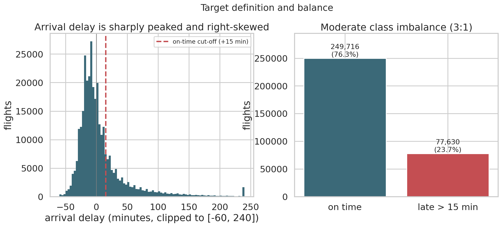
Arrival delay is sharply peaked and heavily right-skewed. The median flight arrives 5 minutes early; the 90th percentile is +52 minutes and the 99th is +190 minutes. Because the distribution has so much mass just below the threshold, the 15-minute cutoff sits on a steep part of the curve — small shifts in conditions move a lot of flights across the line, which is precisely why the problem is learnable at all.
Class balance is a manageable 3:1. That is imbalanced enough that ROC-AUC flatters the model and accuracy is meaningless (a model predicting "on time" for everything scores 76%), so PR-AUC is the headline metric throughout.
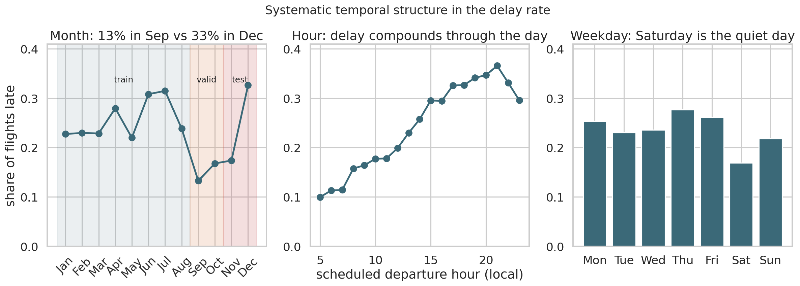
Three temporal structures, all strong:
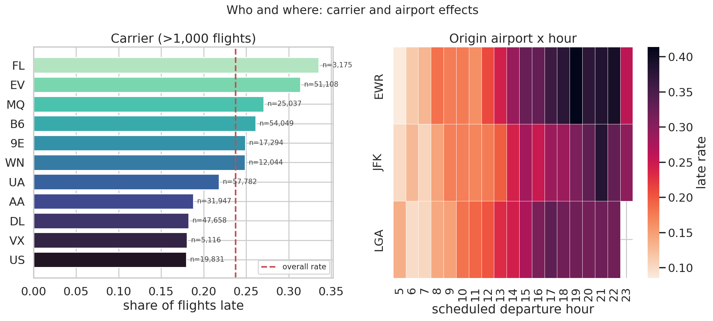
Carrier effects span a factor of three, from Hawaiian at 12.6% to Frontier at 37.3%, though the extremes are thin-volume operators. Among the large carriers the spread is still wide: Delta 18.2% against ExpressJet 31.4%. Newark is the worst of the three airports (25.6%) and LaGuardia the best (22.4%), but the airport effect is small next to the hour-of-day effect.
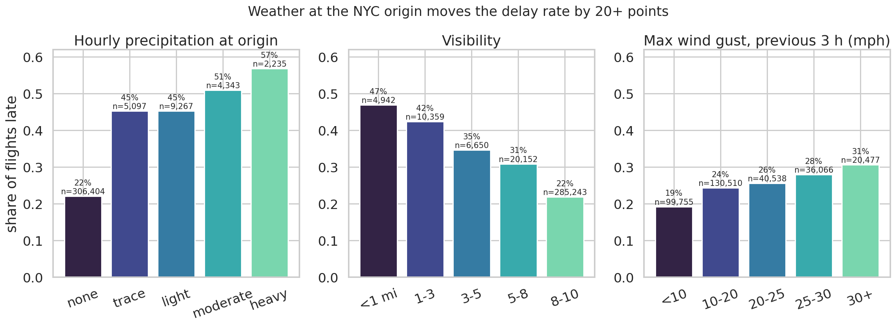
Weather at the origin is the strongest single driver visible in the raw data. Dry hours run 22.1% late; hours with any precipitation run 47.7%. Heavy precipitation reaches 57%. Visibility below 3 miles doubles the rate from 22.9% to 45.5%. Wind gusts matter but less dramatically — 19% below 10 mph, 31% above 30 mph.
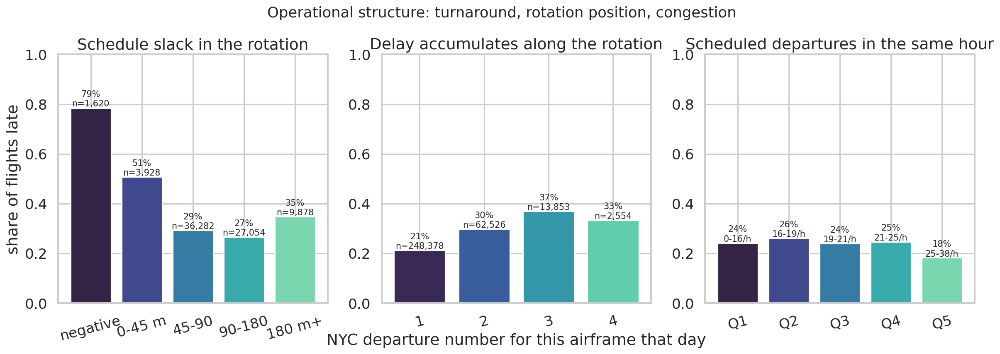
The operational panel is where the feature engineering earns its keep, and it also contains a mistake we made and corrected — see §3.3.
tests/test_features.py verifies that the corrected block time exceeds actual air time by a median of 31 minutes (plausible taxi) and that JFK–LAX comes out near six hours rather than three or nine.67 features in the deployable configuration, in seven families. The organising question for every one of them was: does this quantity exist, in this form, at the scheduled departure time?
Published-schedule facts are known months ahead and cannot leak. Congestion counts fall here: how many flights are scheduled to leave Newark in this hour, how many share this 15-minute slot, what share of the slot belongs to this carrier. We compute these over the whole calendar year, including the test period, and that is correct — the timetable for December was published in advance and contains no information about December outcomes.
Contemporaneous observations exist at the decision point. Origin weather at the scheduled hour qualifies, along with rolling 3- and 6-hour precipitation totals, minimum visibility, maximum gust and pressure tendency, all of which look strictly backwards.
Outcome-derived statistics must be fitted on the training period only. Eight smoothed historical late rates (by carrier, destination, route, tail number, origin × hour, carrier × destination, destination × hour, carrier × hour) use Bayesian shrinkage toward the global prior with m = 50 pseudo-flights, so a route flown twenty times does not get a confident rate.
Inside the training period these encodings are computed out-of-fold across five folds. This is not a formality. tailnum has roughly 4,000 levels; an in-fold encoding would let each flight's own label into its own feature and the model would memorise the training set. The test suite asserts that te_tailnum alone reaches an AUC between 0.50 and 0.62 — a leaked version would approach 1.0.
Our first encoding set included a destination × month key. It looked excellent in training. It is worthless at deployment, and the reason is structural: with a temporal split, no test month ever appears in the training period, so every test row falls back to the global prior. A feature that is informative in training and constant in production is not merely useless, it actively displaces capacity the model could have spent on something that generalises.
The general rule we adopted: any encoding key must be recurrent across the split boundary. dest × hour is fine because December has the same 24 hours as January. dest × month is not. A test in the suite now enforces this by asserting that fewer than half of test rows fall back to the prior for any encoding.
Delay propagation is the dominant mechanism in airline operations — a late inbound aircraft makes the next departure late — so we wanted a turnaround feature. The first attempt computed, per tail number, the gap between the previous leg's scheduled arrival and this departure.
The EDA figure exposed the error immediately: flights with a "turnaround" under 45 minutes were 81% late, but there were only 186 of them, and several had negative turnarounds. The bug is conceptual. This dataset records only flights departing NYC. An aircraft that leaves JFK for Miami must fly back to New York before it can leave again, and that return leg is invisible. The gap we measured spans an entire unobserved round trip, so a "45-minute turnaround" was a data artefact, not a tight turn.
The fix subtracts the previous leg's scheduled block time as an estimate of the unobserved return, leaving the genuine schedule slack:
rotation_slack_min = (sched_dep − prev_sched_arr) − prev_sched_block
The corrected feature behaves like a real operational quantity:
| Schedule slack | Late rate | n |
|---|---|---|
| negative (impossible timetable) | 79% | 1,620 |
| 0–45 min | 51% | 3,928 |
| 45–90 min | 29% | 36,282 |
| 90–180 min | 27% | 27,054 |
| 180 min+ | 35% | 9,878 |
Monotone across the operationally meaningful range, with a sensible uptick at the long tail (very long gaps mean the airframe sat idle through a disrupted day). We kept the mistake in the report because the diagnosis — the data generating process does not contain what I assumed it did — is the lesson.
The same reasoning constrains the post-push-back mode: the inbound arrival delay is only used when the previous leg is same-day and its actual arrival preceded our scheduled departure. A test verifies this holds for every flagged row.
| Family | n | Examples |
|---|---|---|
| Weather | 17 | precipitation and 3/6-hour totals, visibility and 3-hour minimum, wind gust and 3-hour maximum, pressure tendency, temperature, humidity |
| Historical rates | 8 | smoothed out-of-fold late rates by carrier, route, airframe, origin × hour |
| Calendar | 12 | month, day of week, day of year, holiday window, departure hour (raw and cyclical), red-eye flag |
| Route & schedule | 11 | distance, scheduled block time, block time versus route median, implied speed, destination coordinates and elevation |
| Congestion | 7 | departures from the origin in the hour and 15-minute slot, carrier share of the slot, system-wide NYC departures |
| Rotation | 5 | schedule slack, gap since previous NYC leg, tight-turn flag, leg number of the day |
| Aircraft | 6 | age, seats, engines, engine type, manufacturer, airframe class |
Train Jan–Aug (217,727 flights), validate Sep–Oct (55,628), test Nov–Dec (53,991). Never random.
A random split would let the model see flights that happen after the ones it is scored on, and with congestion and weather shared across flights in the same hour, neighbouring rows are close to duplicates. Random-split scores on this dataset are inflated and not comparable to ours.
The temporal split is uncomfortable by construction, and we chose it anyway:
| Period | Late rate |
|---|---|
| Train (Jan–Aug) | 25.6% |
| Validation (Sep–Oct) | 15.1% |
| Test (Nov–Dec) | 25.0% |
Validation sits at a base rate ten points below both neighbours, because September and October 2013 were unusually smooth. This is exactly the situation a deployed model faces — you tune on the recent past and deploy into a future that does not resemble it — and it produces the most interesting result in the study (§6).
40 random draws over nine LightGBM hyperparameters, each scored by PR-AUC on a forward-chaining three-fold time-series split inside the training period: fold k trains on the earliest months and scores the block that follows, never the reverse. Early stopping at 100 rounds within each fold.
Random search rather than grid: with nine interacting dimensions, a grid of 40 points would pin each dimension to one or two values, whereas 40 random draws give 40 distinct values per dimension.
The validation block was deliberately excluded from the search and reserved for early stopping, calibration and threshold selection, so that the test set was scored exactly once, at the end.
Search spread was narrow — best 0.5376, median 0.5328, worst 0.5258 across 40 draws. The problem is not hyperparameter-sensitive, which is itself worth knowing: effort spent on features paid far better than effort spent on tuning.
Selected configuration:
num_leaves 191 · max_depth 8 · learning_rate 0.02 · min_child_samples 100
feature_fraction 0.7 · bagging_fraction 0.9 · lambda_l1 5.0 · lambda_l2 2.0
min_split_gain 0.05 · 391 trees at early stopping
Fold scores 0.490 / 0.560 / 0.563 — the first fold is meaningfully harder, reflecting how much less history it trains on.
Four, each answering a different objection:
All numbers on the untouched Nov–Dec test period: 53,991 flights, 25.0% late.
| Model | PR-AUC | ROC-AUC | Brier | Log loss |
|---|---|---|---|---|
| Base rate | 0.250 | 0.500 | 0.188 | 0.562 |
| Historical-rate rule | 0.340 | 0.621 | 0.182 | 0.547 |
| Logistic regression | 0.478 | 0.708 | 0.166 | 0.509 |
| Random forest | 0.491 | 0.713 | 0.164 | 0.504 |
| LightGBM (tuned) | 0.507 | 0.716 | 0.167 | 0.519 |
| XGBoost (tuned) | 0.508 | 0.716 | 0.167 | 0.517 |
| LightGBM, post-push-back | 0.846 | 0.903 | 0.097 | 0.327 |
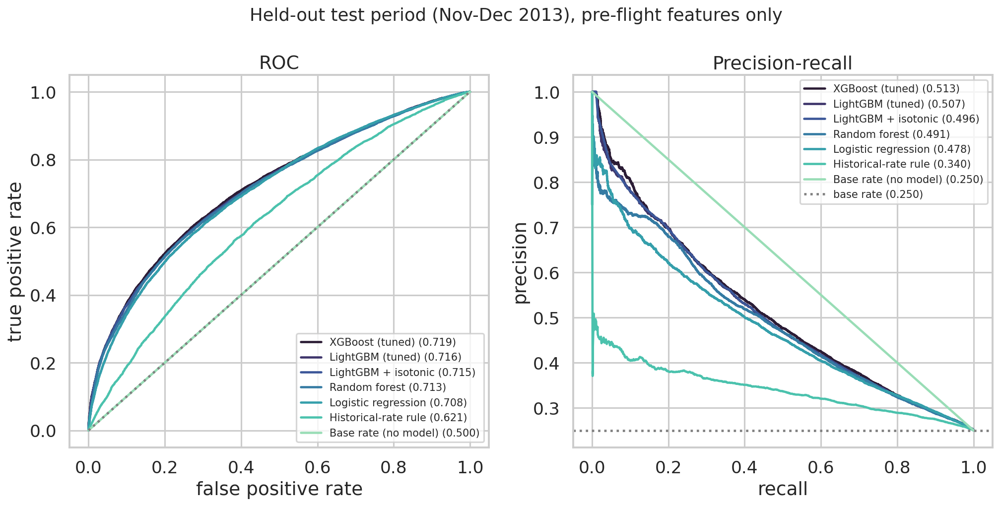
Reading these honestly:
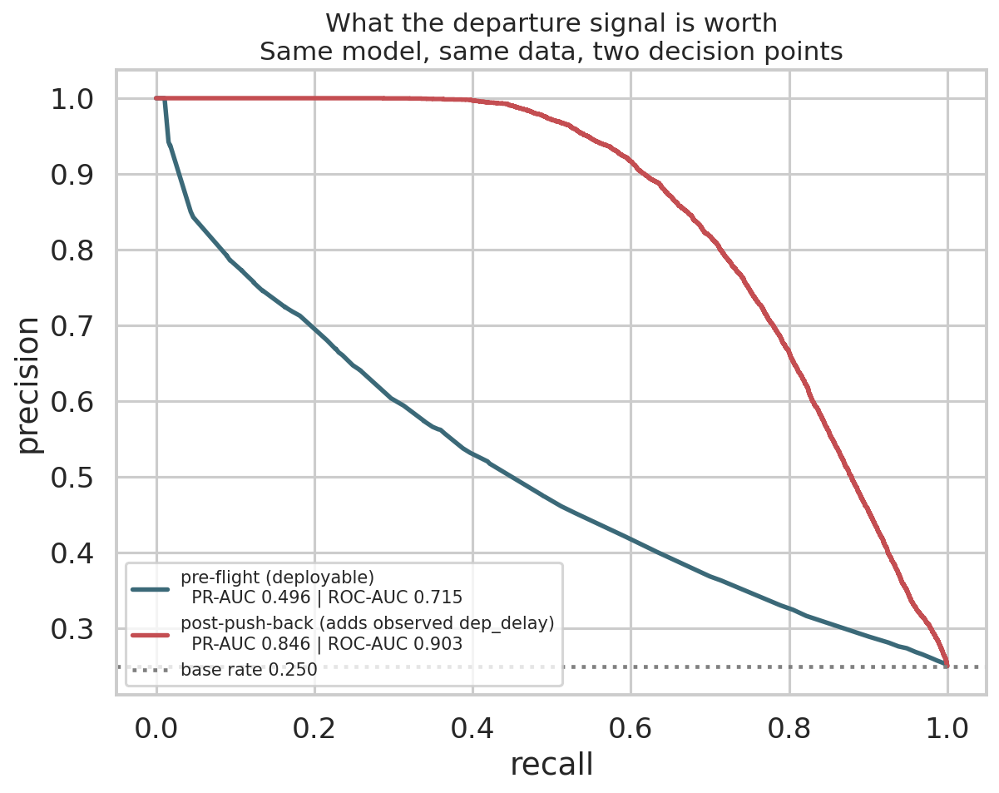
Same model, same features, same split — the only change is admitting dep_delay and the inbound leg's actual delay. PR-AUC goes from 0.507 to 0.846; ROC-AUC from 0.716 to 0.903.
The interpretation is not that our model is weak. It is that arrival delay is mostly departure delay plus noise, and departure delay is not knowable in advance. Any published result in the 0.90 ROC-AUC range on this dataset is answering the post-push-back question. The two numbers are not comparable and should never be quoted side by side without the horizon attached.
A probability is not a decision. We define an explicit cost model: a false alarm wastes agent time and erodes trust; a missed delay causes misconnections, rebooking and compensation. We set the missed-delay cost at 4× the false alarm — a policy choice, stated openly and swept rather than hidden.
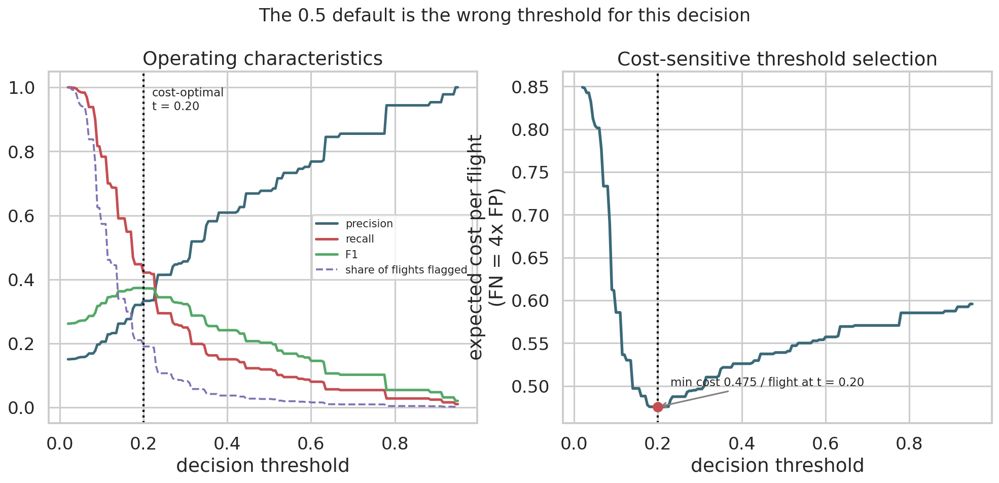
Minimising expected cost on the validation period gives a threshold of 0.20, not 0.5. On the test period that yields:
| Precision | 47.3% |
| Recall | 49.2% |
| F1 | 0.482 |
| Share of flights flagged | 26.0% |
| Expected cost per flight | 0.645 |
Against the alternatives: alerting on nothing costs 1.000 per flight, alerting on everything costs 0.750, and the default 0.5 threshold costs 0.844. The default threshold captures barely a fifth of the available benefit. Choosing it by cost rather than convention is the difference between a model that helps and one that does not.
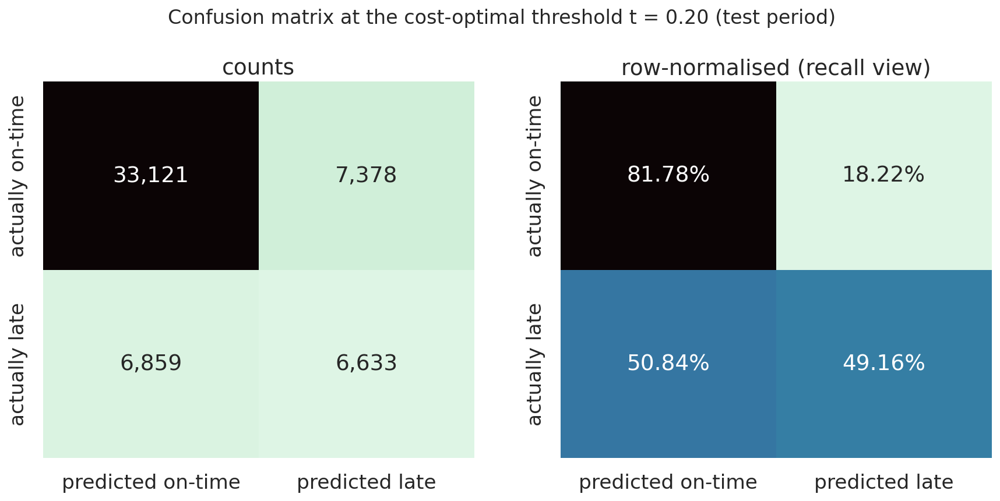
A desk cannot act on 26% of flights. Fixing the alerting budget at the top 10% by predicted risk:
| Flights flagged | 5,399 |
| Of which actually late | 64.1% |
| Share of all late flights caught | 25.7% |
| Lift over base rate | 2.56× |
Two out of every three flights the model puts at the top of the list do arrive late, against a background rate of one in four. For a triage tool this is the number that matters, and it is considerably more encouraging than ROC-AUC 0.716 sounds.
A second LightGBM regressor predicts arrival delay in minutes, trained with an L1 objective because the right tail would otherwise dominate a squared-error fit.
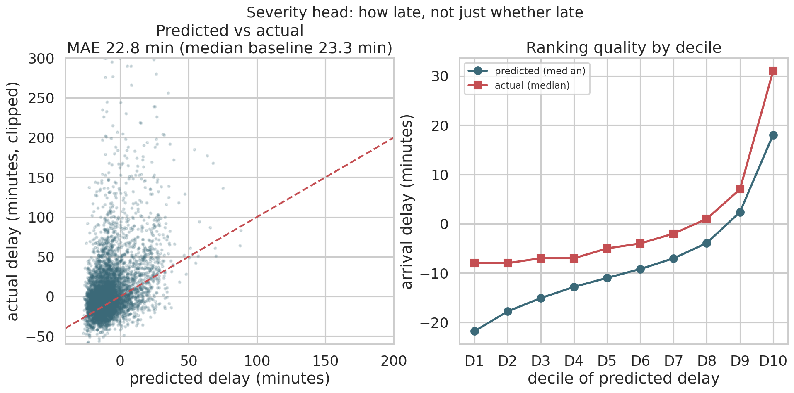
The honest summary is mixed, and the two halves point in opposite directions:
So the severity head should be presented as a sorting tool, not a forecasting tool. "This flight is in the worst decile, where the typical delay is half an hour" is supportable. "This flight will be 31 minutes late" is not.
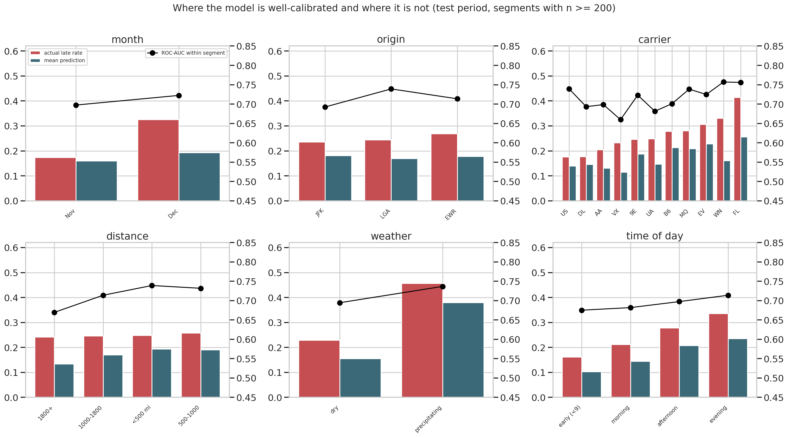
Broken out by month, origin, carrier, distance, weather and time of day (segments with n ≥ 200):
This section is the analytical core of the report.
The model's average prediction on the test period is 0.175 against an actual rate of 0.250. It is systematically under-confident. But the failure is not uniform:
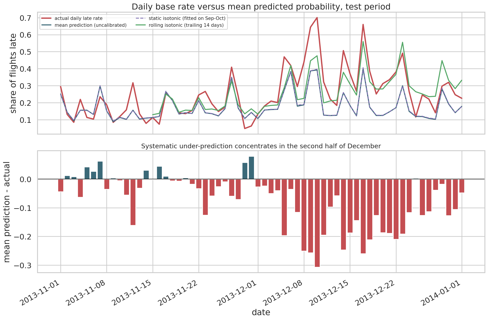
Through November the daily mean prediction tracks the daily actual rate closely, including the sharp spikes. From roughly 8 December the two diverge and never reconverge: on the worst days the model predicts 0.40 while 0.70 of flights arrive late.
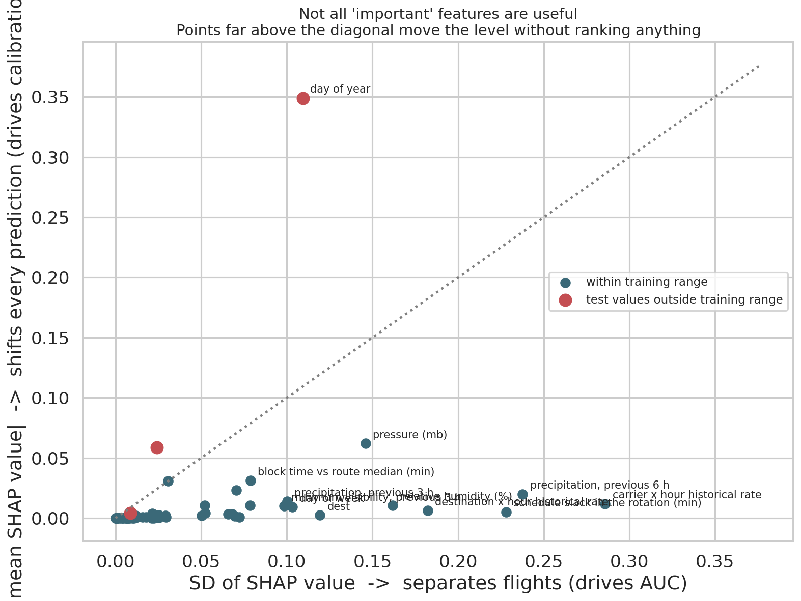
SHAP ranks day_of_year as the single most influential feature by mean |SHAP|, ahead of every weather and historical-rate variable. That is suspicious, and inspecting it explains the drift:
day_of_year alone accounts for 69% of the model's average downward push.The scatter plot above generalises this. Plotting |mean SHAP| against SD of SHAP separates two behaviours that the standard importance bar chart adds together:
day_of_year is the extreme case, and all three flagged out-of-range features (day_of_year, week_of_year, month) sit there.te_carrier_sched_dep_hour (SD 0.286) and wx_precip_6h (SD 0.236) are the real discriminators.Mean |SHAP| conflates the two, and on a temporal split it will reliably promote calendar indices to the top of the chart while they are contributing nothing to discrimination. We have not seen this stated in the standard SHAP guidance and consider it the most transferable finding here.
Delete the offending features? We tested it. Removing day_of_year, week_of_year and month costs 0.016 PR-AUC (0.505 → 0.489). They earn their place through interactions with other features even though their direct contribution is a constant offset. Removing them is a net loss.
Calibrate once on the validation period? Isotonic regression fitted on Sep–Oct changes the test Brier score from 0.18006 to 0.18003 — nothing. It cannot help, because it was fitted where the base rate is 15% and applied where it is 25%, so it corrects in the wrong direction.
Recalibrate continuously. Each day, refit an isotonic map on the previous 14 days of flights that have already landed — labels a deployed system genuinely has — and use it to score today. Every day is scored by a calibrator that has never seen it.
| Method | Brier | Log loss | Mean prediction |
|---|---|---|---|
| Uncalibrated | 0.1801 | 0.5526 | 0.183 |
| Isotonic, fitted on validation | 0.1800 | 0.5518 | 0.185 |
| Isotonic, rolling 14 days | 0.1698 | 0.5209 | 0.259 |
| (actual rate) | 0.276 |
A 5.7% reduction in both Brier score and log loss, and the mean prediction moves from 0.183 to 0.259 against an actual 0.276. The green line in the drift figure tracks December where the blue and purple lines flatten.
The operational conclusion: for this problem, the maintenance burden is recalibration, not retraining. Retraining is expensive and needs a full season of new labels; rolling recalibration needs two weeks of outcomes and a few milliseconds of isotonic regression. The discriminative structure the model learned in January still holds in December — only the level moved.
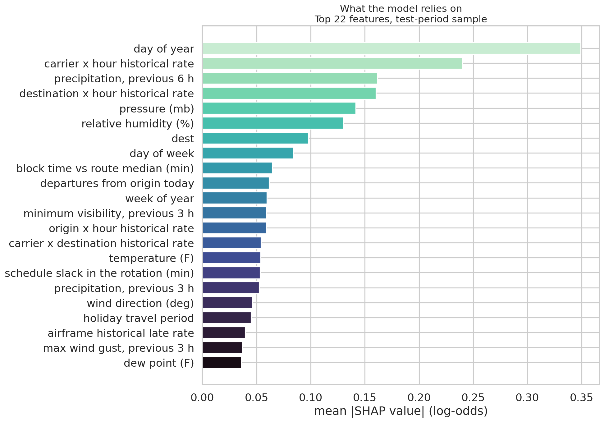
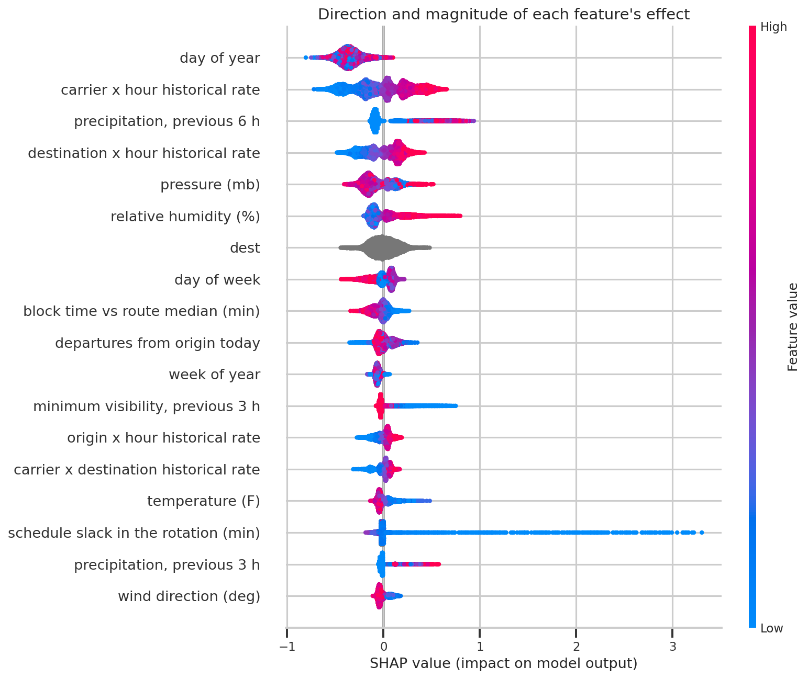
Setting aside day_of_year (§6.1), the top features are the carrier × hour historical rate, 6-hour precipitation, the destination × hour rate, pressure and humidity. The beeswarm confirms the directions are physically sensible: high precipitation pushes towards late, high pressure (fair weather) pushes towards on-time, high historical rates push towards late.
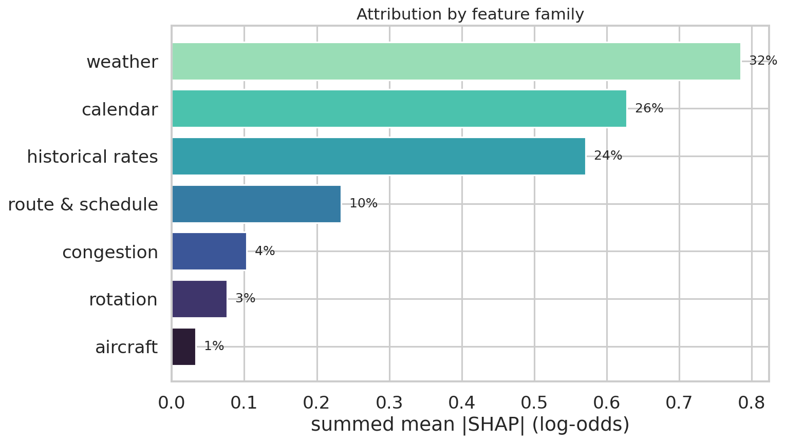
By family, attribution splits weather 32%, calendar 26%, historical rates 24%, route and schedule 10%, congestion 4%, rotation 3%, aircraft 1%.
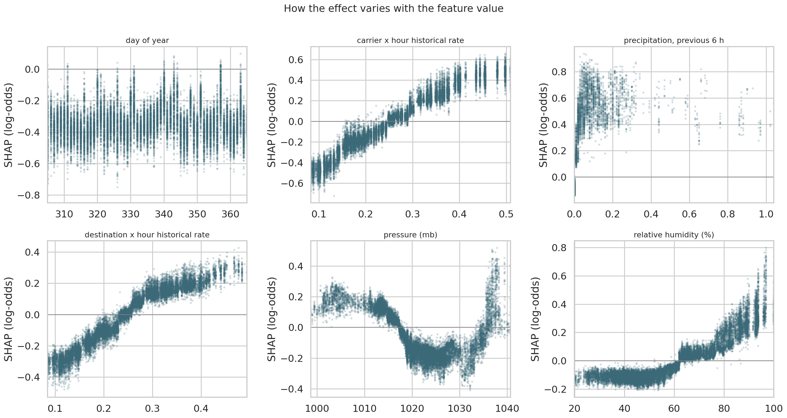
The dependence plots show threshold behaviour rather than linear response. Precipitation has almost no effect until it becomes non-zero, then jumps. Visibility matters below about 5 miles and is flat above it. This is why tree ensembles beat logistic regression here, and also why the margin is only 0.029 — the thresholds are sharp but few.
SHAP measures how much the fitted model leans on a feature. That is not the same as how much predictive value the feature carries, because a feature can be heavily used and entirely redundant. To measure value we retrained the model with each family removed and recorded the drop in test PR-AUC.
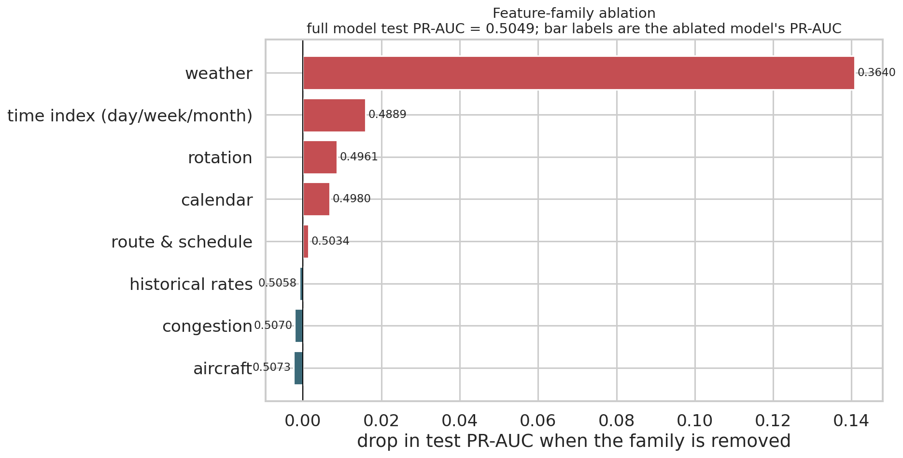
| Family removed | Test PR-AUC | Change |
|---|---|---|
| — (full model) | 0.5049 | — |
| Weather | 0.3640 | −0.1409 |
| Time index (day/week/month) | 0.4889 | −0.0160 |
| Rotation | 0.4961 | −0.0088 |
| Calendar (all) | 0.4980 | −0.0069 |
| Route & schedule | 0.5034 | −0.0015 |
| Historical rates | 0.5058 | +0.0009 |
| Congestion | 0.5070 | +0.0021 |
| Aircraft | 0.5073 | +0.0024 |
Three conclusions, two of them uncomfortable:
A leaner model — weather, calendar, route, carrier, rotation — would score within noise of the full one at roughly a third of the features. We report the full model because it is what the search selected, but the ablation is the more useful result for anyone building on this.
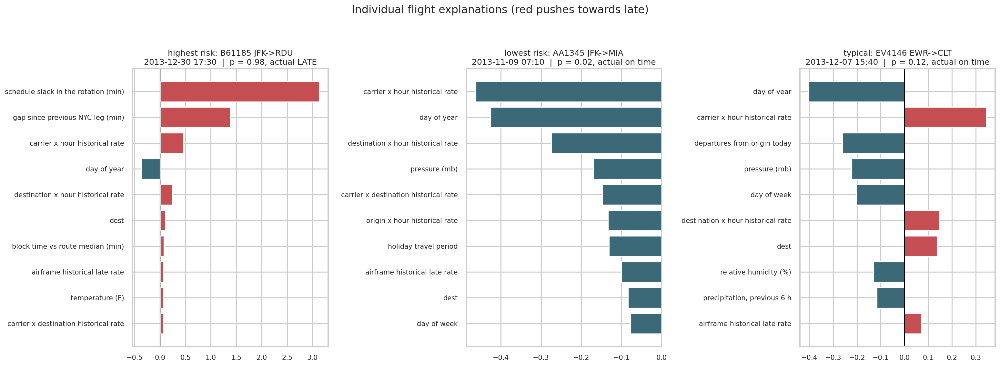
Because SHAP decomposes each prediction exactly, every score comes with a reason an operations agent can read. The highest-risk flight in the test sample — B6 1185, JFK→RDU, 30 December at 17:30, p = 0.98, which did arrive late — is driven almost entirely by rotation slack (+3.1 log-odds): the timetable gave that airframe an impossible turnaround on one of the worst days of the year. The lowest-risk flight, AA 1345 JFK→MIA at 07:10 on 9 November, is pushed down by the carrier × hour rate and the early departure slot.
Stated plainly, because most of them bound the result.
On the problem. Arrival delay is predictable in advance to a useful but bounded degree: PR-AUC 0.507 against a 0.250 base rate, with 64% precision on the riskiest 10% of flights. That is a genuine triage tool and not a crystal ball. The much higher numbers commonly reported for this dataset come from including the observed departure delay, which lifts PR-AUC to 0.846 and answers a question nobody needs answered.
On what matters. Weather dominates everything else by an order of magnitude. Feature construction beat model selection: logistic regression on good features beat the historical-rate rule by 0.138 PR-AUC, while gradient boosting on those same features beat logistic regression by only 0.029. Two independently tuned boosting libraries landed within 0.001 of each other, which suggests the ceiling here is the data, not the algorithm.
On method. Three of our findings are about method rather than flights, and they are the ones most likely to transfer:
On deployment. Ship the pre-flight model with a cost-derived threshold of 0.20 rather than 0.5 — the default forfeits four fifths of the available benefit — and a rolling 14-day isotonic recalibration, which recovers 5.7% of Brier score under the December shift that retraining alone would not catch.
pip install -r requirements.txt
make reproduce # ~15 minutes on 4 coresEvery figure and every number above is regenerated by that command. Seeds are fixed (SEED = 42 in src/config.py); random search draws are seeded, so draw i is always the same hyperparameter set.
| File | Contents |
|---|---|
reports/metrics/evaluation.json |
every test metric, threshold sweep, calibration comparison |
reports/metrics/lgbm_search.json |
all 40 search draws with per-fold scores |
reports/metrics/xgb_search.json |
8 XGBoost draws |
reports/metrics/ablation.json |
feature-family ablation |
reports/metrics/shap_importance.json |
SHAP importance, group shares, out-of-range diagnostics |
reports/metrics/segment_errors.csv |
per-segment error analysis |
reports/metrics/threshold_sweep_validation.csv |
full precision/recall/cost curve |
reports/metrics/eda_summary.json |
descriptive statistics |
reports/figures/01–22 |
all figures |
14 checks in tests/test_features.py, run with make test:
Leakage — pre-flight features exclude all outcome columns; gate mode adds exactly the three post-push-back features; the inbound-leg delay never reads from the future; the tail-number encoding is genuinely out-of-fold; every encoding key recurs across the split boundary.
Split integrity — splits are disjoint, ordered in time, and no rows are lost across the joins.
Feature correctness — timezone-corrected block time matches air time plus plausible taxi and JFK–LAX comes out near six hours; HH:MM conversion; congestion counts nest correctly; rotation gaps are non-negative and same-day; the target matches its definition; the weather join is complete after filling; no object dtypes reach the model.